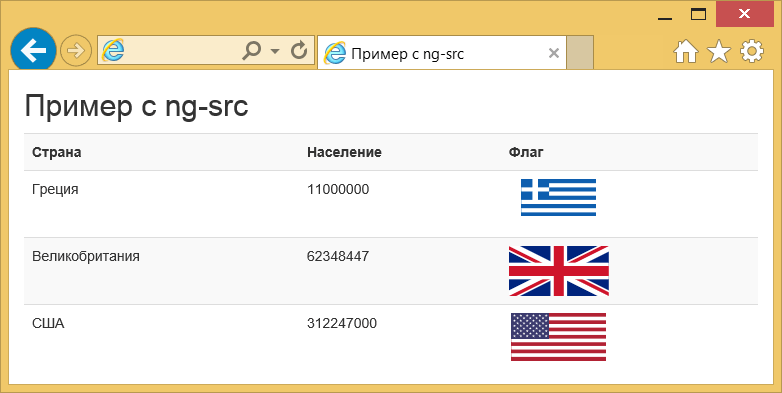

AngularJS ng-src
В простом HTML мы используем тег <img> чтобы вставить изображение на наш сайт. Например, это может быть добавление образца:
<img src="image.png" alt="Образец изображения" height="64" width="64">Теперь, с точки зрения AngularJS и вставки изображений, легко утверждать, что мы можем аналогично указать на изображение, используя один из стандартных шаблонов Angular. Я думаю, все перейдут на ту «разметку», в которой применяются двойные фигурные скобки {{}}, чтобы связать выражения с элементами.
Однако разметка Angular, вроде {{hash}}, внутри атрибута src не работает должным образом, так как браузер получит из URL буквальный текст {{hash}}, пока Angular заменяет выражение внутри {{hash}}.
Директива ngSrc в Angular решает эту проблему.
Как упоминалось, «глючный» способ реализации выглядит так:
<img src="http://www.gravatar.com/avatar/{{hash}}" alt="Аватар">Но правильный путь для написания использует директиву ngSrc:
<img ng-src="http://www.gravatar.com/avatar/{{hash}}" alt="Аватар">Идея примера
Для нашего удобства, мы воспользуемся существующим примером, в котором я продемонстрировал выборку из JSON. Иными словами, если предположить, что на странице нам надо отобразить данные некоторых стран, мы также хотим чтобы пользователь видел флаг страны. Таким образом, мы используем директиву ngSrc в связке с JSON-файлом. Это не настолько понятно для начинающих, но я также опишу его применение.
Пример
Мой предыдущий пример связанный с выборкой из JSON, описывает, как загрузить и «употребить» файл в формате JSON в приложении AngularJS, так что вы быстро разберётесь в этом.
JSON-файл
Вот сокращённая версия нашего JSON-файла:
countries.json
[
{
"name": "Греция",
"population": 11000000,
"flagURL": "//upload.wikimedia.org/wikipedia/commons/5/5c/Flag_of_Greece.svg"
},
{
"name": "Великобритания",
"population": 62348447,
"flagURL": "//upload.wikimedia.org/wikipedia/commons/a/ae/Flag_of_the_United_Kingdom.svg"
},
{
"name": "США",
"population": 312247000,
"flagURL": "//upload.wikimedia.org/wikipedia/commons/a/a4/Flag_of_the_United_States.svg"
}
]Таким образом, файл включает в себя дополнительный ключ: flagURL.
Извлечение данных JSON
Мы можем загрузить файл в формате JSON в приложение Angular в переменную $scope, путём вызова сервиса $http, базовому сервису Angular, который облегчает общение с удалёнными HTTP-серверами через объект браузера XMLHttpRequest или через JSONP.
На практике это означает, что вам требуется развернуть приложение на веб-сервере, а не выполнить его в браузере. Для получения более подробной информации об этом факте, пожалуйста, обратитесь к этому посту.
Чтобы сделать это, мы будем повторно использовать фрагмент кода из существующего примера, предполагая, что:
- Angular-приложение называется contryApp.
- Наш контроллер называется CountryCtrl.
- Наш JSON-файл называется countries.json и находится в корневой папке приложения.
$http.get('countries.json').success(function(data) {
$scope.countries = data;
});Отображение JSON-файла
Соблюдая ту же концепцию, что и в предыдущем разделе, давайте посмотрим как отобразить флаг страны с помощью директивы ngSrc:
<!DOCTYPE html>
<html ng-app="countryApp">
<head>
<meta charset="utf-8">
<title>Пример с ng-src</title>
<link rel="stylesheet" href="https://maxcdn.bootstrapcdn.com/bootstrap/3.3.5/css/bootstrap.min.css">
<script src="https://ajax.googleapis.com/ajax/libs/angularjs/1.4.7/angular.min.js"></script>
<script>
var countryApp = angular.module('countryApp', []);
countryApp.controller('CountryCtrl', function ($scope, $http){
$http.get('countries.json').success(function(data) {
$scope.countries = data;
});
});
</script>
</head>
<body ng-controller="CountryCtrl">
<div class="container">
<h2>Пример с ng-src</h2 >
<table class="table table-striped">
<tr>
<th>Страна</th>
<th>Население</th>
<th>Флаг</th>
</tr>
<tr ng-repeat="country in countries">
<td>{{country.name}}</td>
<td>{{country.population}}</td>
<td><img ng-src="{{country.flagURL}}" width="100"></td >
</tr>
</table>
</div>
</body>
</html>Строки 2, 8-15 и 17 выполняют предположения, сделанные в разделе про извлечение данных JSON. Давайте воспользуемся таблицей HTML чтобы группировать данные в формате JSON соответствующим образом. Строки 22-24 определяют заголовки таблицы для названия страны, её населения и флага.
То есть мы хотим разделить данные каждой страны на её название, население и флаг, чтобы отобразить каждое в соответствующей колонке таблицы. Для этой цели мы будем использовать директиву ngRepeat, которая создаёт экземпляр шаблона за раз из коллекции. Каждый экземпляр шаблона получает собственную область видимости, где переменная цикла установлена на текущее положение элемента, а $index устанавливается на индекс или ключ элемента.
Когда дело доходит до нашего случая, для обработки в цикле стран мы предполагаем, что каждая страна выступает строкой таблицы:
<tr ng-repeat="country in countries">
</tr>Итак, теперь страна обрабатываются каждый раз, когда можно получить данные из переменной country. Это проще понять, учитывая что строки 27-29 разбирают название каждой страны, её население и флаг по соответствующим столбцам таблицы.
В дополнение официальная документация для ngSrc утверждает, что директива может принять любой аргумент типа template. То есть она принимает любую строку, которая может содержать разметку {{}}.
Демонстрация
Запустим пример на локальном сервере. Для этого примера приложение может быть доступно из браузера по адресу http://localhost:8080/angularjs_ngsrc/.

Рис. 7.1. Скриншот приложения
Скачать
Вы можете скачать полный исходный код этого примера здесь: angularjs_ngsrc.zip.